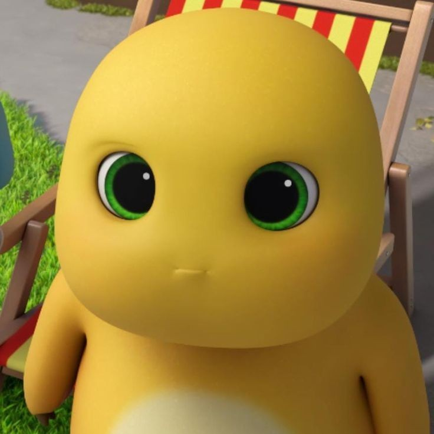
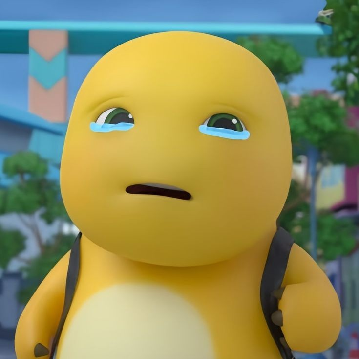
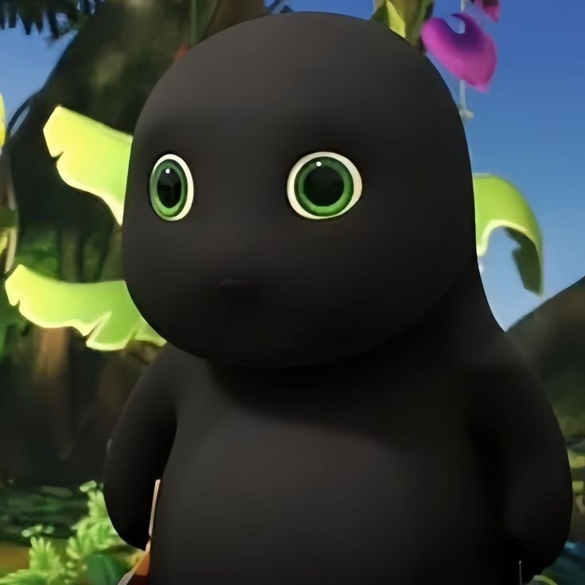

Nailong Gallery

Cute Nailong
Nailong gives a blank, wide-eyed stare that suggests the lights are on, but nobody is home inside that smooth, round head.

Goofy Nailong
Nailong gives a blank, wide-eyed stare that suggests the lights are on, but nobody is home inside that smooth, round head.

Crying Nailong
The poor yellow guy is sobbing his heart out, looking like he just discovered that his tummy isn't actually a bottomless pit for food.

Black Nailong
Nailong looks like he tried to hug a firework and is now silently regretting his life choices as a crispy, soot-covered nugget.